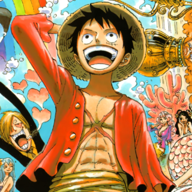
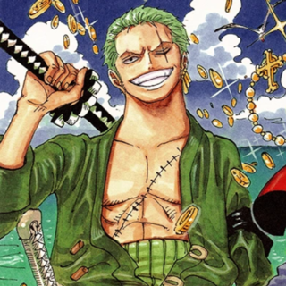

-
Strawhat top3 strongest crews

Monkey.D.Luffy

°The captain of the increasingly infamous and powerful Straw Hat Pirates, his dream is to find the legendary One Piece and become the Pirate King. Despite his naive attitude, he is an incredible leader whom the Straw Hats proudly follow.
Roronoa Zoro

°Roronoa Zoro is the swordsman, first member and Vice Captain of the Straw Hat Pirates. He uses the Santoryu-style (Three Sword Style) of sword combat and aims to become the world's greatest swordsman. He has a bounty of 1,111,000,000 berries and is one of the eleven supernova rookies of the 'Worst Generation' of pirates.
Vinsmoke Sanji

°Sanji Vinsmoke is the cook of the Straw Hat Pirates and lover of all things women. His dream is to find the All Blue of the sea. His bounty is currently 330,000,000 beri.
Blackbeard top3 strongest crews

Marshall D. Teach

°Blackbeard is the Admiral of the Blackbeard Pirates and currently is one of the four Yonko. He was once a member of the Whitebeard Pirates and later a shichibukai. He murdered his commander and Whitebeard for the Yami-Yami no mi and Gura-Gura no mi. His real name is Marshall D. Teach.
Kuzan

°Kuzan, better known by his former epithet Aokiji, is a former Marine admiral. He ate the Ice-Ice Fruit, turning the him into a Freezing Man. He was a former friend of vice-admiral Jaguar D. Saul and shares a history with Nico Robin. Currently, he is allied with the Blackbeard Pirates for unknown reasons.
Shiryu

°Shiryu of the Rain is the former Head Jailer of Impel Down. Imprisoned in his own jail for slaughtering prisoners for sport. He is now one of the Ten Titanic Captains of the Blackbeard Pirates and their vice-captain. His current bounty is unknown.
Roger top3 strongest crews
![Đây]()
Gol.D.Roger

°The late Pirate King who was the captain of the Roger Pirates and owner of the most legendary and renowned treasure, One Piece. He was the lover of Portgas D. Rouge, and the father of Portgas D. Ace. He was born and executed in Loguetown in East Blue. He is commonly known to the world as Gold Roger. Roger was famed as the man who did what no one thought possible–he conquered the Grand Line and amassed a vast fortune.
Silvers Rayleigh

°He is the former first mate of the Roger Pirates led by the late Gol D. Roger. After his captain's execution, he retired from piracy and became a coating mechanic in the Sabaody Archipelago. He trained Luffy over the timeskip, particularly how to use the three forms of Haki.
Scopper Gaban

°Member of the Roger Pirates.He was the one who saved Gol.D.Roger from 150 pirates.Meanwhile,he destroyed two mountains after a week of fighting to protect the pirate king.